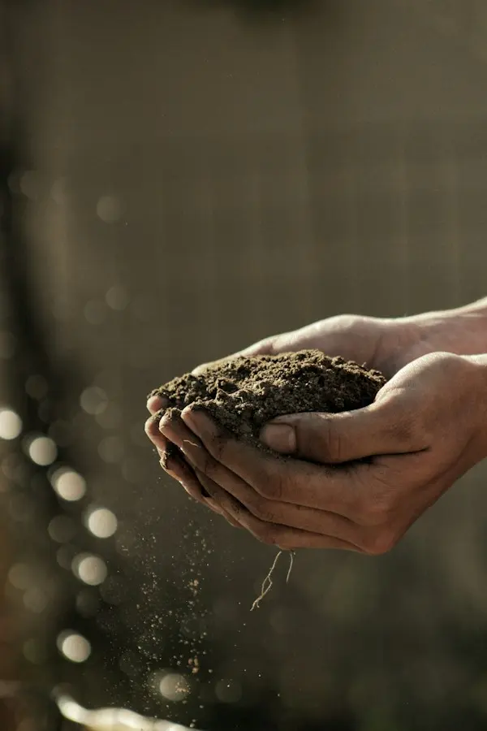

Nächste Auswertung
Herbst 2027, Beispieltermin. Wir veröffentlichen sie an dieser Stelle.
Für Ackerbau und Grünland
Für Ihren Ertrag. Für das Grundwasser.
Ein mineralischer Bodenverbesserer in Pelletform, der Nährstoffe dort abgibt, wo die Wurzeln sind. Ob das auf Ihrem Standort stimmt, zeigen unsere offenen Versuche.
Bekannt aus und gefördert von (Platzhalter, keine echten Namen)
Ein Teil verflüchtigt sich, ein Teil wird bei Regen ausgewaschen, ein Teil bindet sich im Boden. Übrig bleiben höhere Kosten und mehr Überschuss, als Ihnen lieb ist.
bis zu 30 Prozent
des ausgebrachten Stickstoffs gehen verloren, bevor die Pflanze ihn nutzt.
Beispielzahl. Quelle: Platzhalter, vor Auslieferung durch eine geprüfte Quelle mit Jahr ersetzen.
Das Bodenpellet ist ein Mineraldünger, der seine Nährstoffe verteilt abgibt, statt sie auf einmal in den Boden zu geben. Es ist die Basis unserer Produktfamilie.
Produkte anfragenDas Pellet läuft durch den Düngerstreuer, den Sie ohnehin haben. Kein Umbau, keine neue Maschine.
Die Mineralhülle löst sich nach und nach, damit nicht alles auf einmal im Boden liegt. So die Idee, belegt wird sie durch die Versuche.
Eine Gabe statt mehrerer kleiner Gaben. Das spart Diesel, Zeit und Bodenverdichtung. Beispielaussage, je Kultur zu prüfen.
Mit dem vorhandenen Streuer auf die Fläche, wie Sie es kennen.
Die Hülle gibt Nährstoffe nach und nach frei. Beispielaussage, je Boden verschieden.
Das ist das Ziel, nicht das Versprechen. Ob es gelingt, zeigen die Versuche weiter unten.
Bodenproben vor und nach der Saison, Ergebnisse in der Versuchsübersicht.
Mineralischer Bodenverbesserer, Basis der Produktfamilie. Name und Angaben sind Beispiele.

| Wert | Was gezählt wird | Stand |
|---|---|---|
| 4 | Kulturen im Versuch | Beispiel |
| 12 | Versuchsflächen auf Betrieben | Beispiel |
| 2 | Vegetationsperioden Laufzeit | Beispiel |
| 0 | veröffentlichte Endergebnisse | Beispiel, siehe Versuchsübersicht |
Ein Wert steht erst hier, wenn die Auswertung abgeschlossen ist. Bis dahin steht er in der Versuchsübersicht als laufend.
Sechs Betriebe in sechs Bundesländern, jeweils mit einer Kultur. Die Liste und die Karte sind Beispiele.
Wir zeigen, was wir wissen und was nicht. Diese Übersicht ist ein Beispiel für den Aufbau, die Einträge sind erfunden.
| Standort | Kultur | Start | Stand |
|---|---|---|---|
| Niedersachsen | Kartoffel | Frühjahr 2026 | Ernte steht aus |
| Brandenburg | Roggen | Herbst 2025 | Auswertung läuft |
| Bayern | Mais | Frühjahr 2026 | Ernte steht aus |
| Schleswig Holstein | Raps | Herbst 2026 | Aussaat erfolgt |

Herbst 2027, Beispieltermin. Wir veröffentlichen sie an dieser Stelle.
Weil Sie Ihre Entscheidung nicht auf ein Versprechen stützen sollten. Auch ein schwaches Ergebnis wird veröffentlicht. Beispieltext.
Ein Betrieb beschreibt, wie das Pellet durch den vorhandenen Streuer lief. Beispielbeitrag.
Wie wir Proben nehmen und warum wir sie vor der Saison wiederholen. Beispielbeitrag.
Ein Standort, an dem der Effekt ausblieb, und was wir daraus gelernt haben. Beispielbeitrag.
Die drei häufigsten Fragen zum Ausbringen, kurz beantwortet. Beispielbeitrag.
Alle Antworten sind Beispiele und je Produkt festzulegen.
Beispielantwort: Der Preis hängt von Kultur, Boden und Menge ab. Wir rechnen ihn mit Ihnen vorab durch, unverbindlich und ohne Verpflichtung.
Beispielantwort: Nein. Das Pellet ist für gängige Düngerstreuer ausgelegt. Welche Modelle wir geprüft haben, steht im Datenblatt.
Beispielantwort: In der Versuchsübersicht. Dort steht, was abgeschlossen ist und was noch läuft. Ergebnisse veröffentlichen wir erst nach der Auswertung.
Beispielantwort: Die Düngeverordnung gilt weiter, auch für unsere Produkte. Wir nennen Ihnen den Nährstoffgehalt für Ihre Bedarfsermittlung. Rechtlich nicht geprüft.
Beispielantwort: Ja, wir empfehlen das. Eine Teilfläche neben Ihrer gewohnten Düngung, mit gleicher Bodenprobe vorher und nachher.
Beispielantwort: In der Saison in der Regel innerhalb von zwei Wochen, per Spedition auf den Hof. Außerhalb der Saison nach Absprache.
Schreiben Sie uns Fläche und Kultur, wir melden uns mit einem Vorschlag und einem Preis. Auf Wunsch mit einer Teilfläche zum Testen.